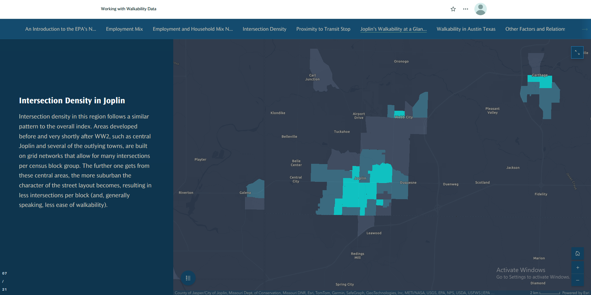
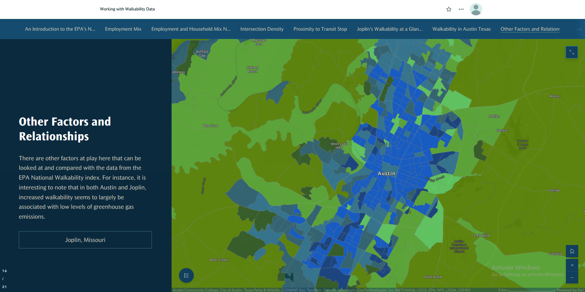

StoryMaps is an ESRI app that allows for the creation of interactive digital presentations that can present maps and other information in easily-accessible, user-friendly ways. As our problem statement involved creating user-friendly maps that introduce walkability factors to those with little understanding of the subject, StoryMaps immediately jumped out as a potential solution. The StoryMap created by our group breaks down the EPA's walkability index into its component factors and displays them across multiple geographies: the United States as a whole, the City of Joplin, Missouri, and the City of Austin, Texas. In addition to displaying the four main factors themselves (intersection density, distance to transit, employment mix, and employment-housing mix), the StoryMap also shows some comparisons and relationships between other data present in the index layers. For example, there is a comparison between zero-car households and low-wage employees for Joplin that shows where there might be many low-wage employees whose mobility is limited by a lack of personal transport. As one progresses through the presentation, text annotations explain each walkability factor and comment on the spatial patterns present in the data.
The first page of the StoryMap, describing the overall walkability index for the whole USA
The seventh page of the StoryMap, describing intersection density in Joplin, Missouri
The sixteenth page of the StoryMap, showing the relationship between walkability score and greenhouse gas emissions in Austin, Texas.